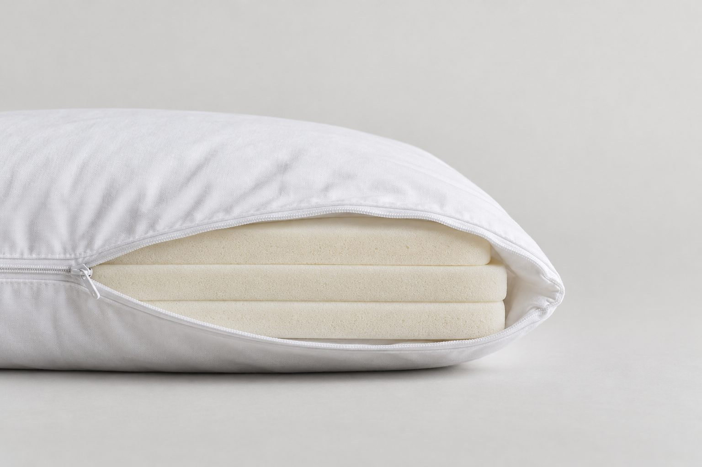
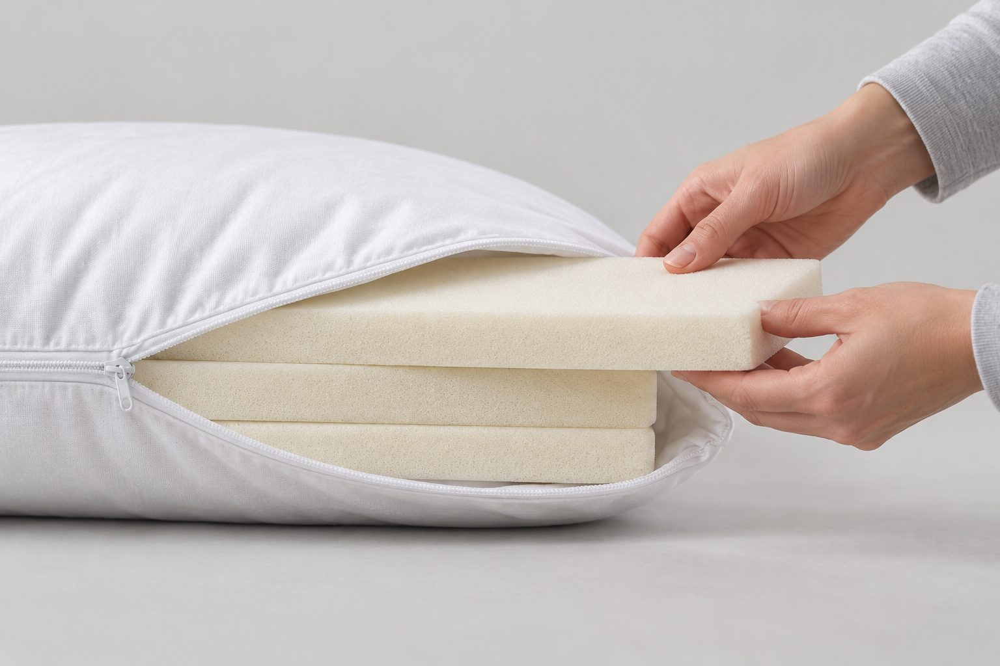
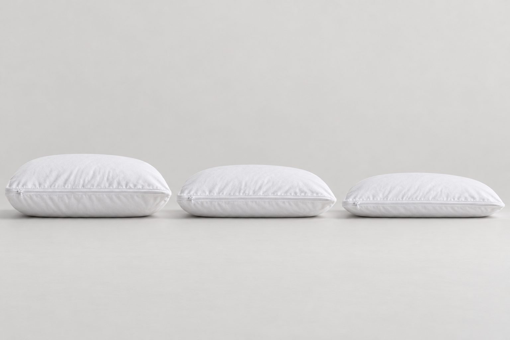
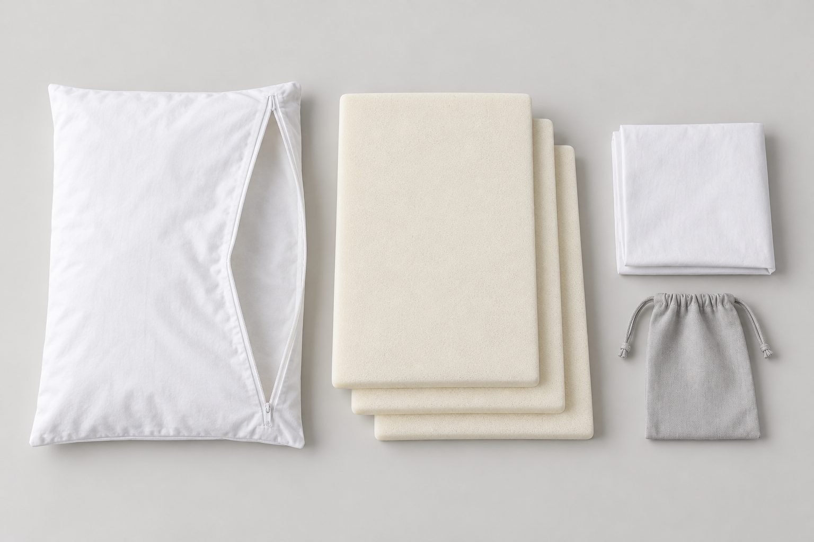
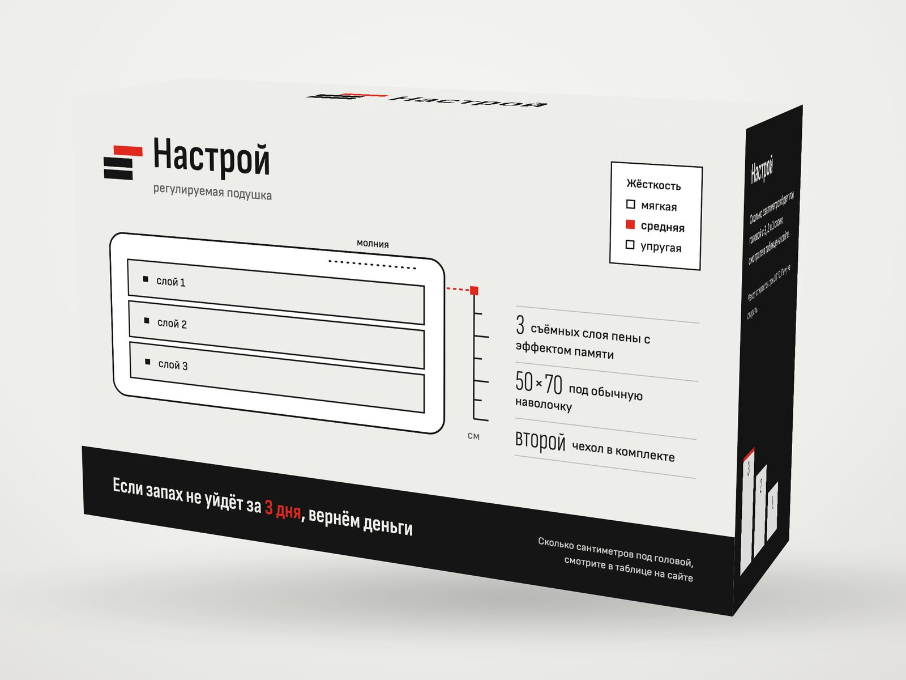
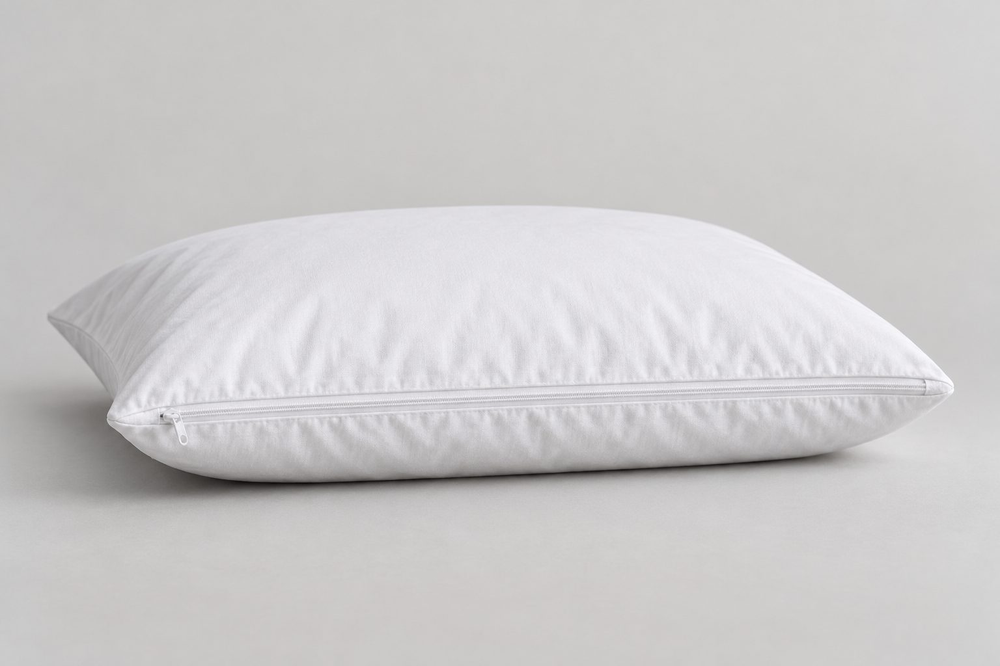

Три высоты в одной подушке
Три целых слоя дают три высоты. Подушку можно перенастроить в любой день, например после смены матраса или позы сна.
Без химического запаха: если запах не уйдёт за 3 дня, вернём деньги. Пишем, сколько сантиметров будет под головой с одним, двумя и тремя слоями.

3 слоя: сантиметры появятся после замера образца
Фото: визуализация, товар учебный.
Если запах не уйдёт за 3 дня, вернём деньги. Подушку и коробку возвращать не нужно. Как вернуть деньги
Три съёмных слоя пены с эффектом памяти: вынули слой, и подушка ниже. Жёсткость пены выбираете при заказе: мягкая, средняя или упругая.
50×70см
Под обычную наволочку, второй чехол в комплекте.
Как вернуть деньги за запах
Новая пена иногда пахнет: о запахе пишут в 500 из 850 плохих отзывов о регулируемых подушках. Если запах не уйдёт за 3 дня, деньги вернём так:
Сантиметры под головой
Мы проверили 17 карточек похожих подушек. Если высоту там и указывают, то для подушки на столе, а сколько остаётся под головой, не пишет никто. Мы покажем эти сантиметры для одного, двух и трёх слоёв.
Слои вместо крошки
В подушках с крошкой высоту подбирают горстями наполнителя. У «Настроя» её меняют целым слоем, и на кровать ничего не сыплется.

Это анатомическая подушка 50×70 см для сна на боку, на спине и на животе. Высоту вы настраиваете сами.
Внутри белого чехла на молнии лежат три съёмных слоя пены с эффектом памяти. Пена подстраивается под голову и шею, поэтому такие подушки и называют анатомическими.
Чтобы подушка стала ниже, расстегните молнии верхнего и внутреннего чехла и выньте один слой. Чтобы стала выше, верните слой на место. Вынутые слои хранятся в мешке из комплекта, так что ничего не потеряется.
В заказе отметьте жёсткость пены: мягкую, среднюю или упругую. Верхний чехол снимается и стирается при 30 °C, а пока он в стирке, на подушку можно надеть второй чехол из комплекта. На неё подойдёт обычная наволочка 50×70 см.
Сколько сантиметров остаётся под головой с тремя, двумя и одним слоем, мы покажем в таблице высот, когда замерим образец. Подушка стоит 2 960 ₽.
Три целых слоя дают три высоты. Подушку можно перенастроить в любой день, например после смены матраса или позы сна.
Для одного, двух и трёх слоёв мы укажем два значения: высоту подушки на столе и высоту под головой, когда пена сжата.
Остался ли запах, решаете вы сами, без доказательств. Подробности в разделе «Как вернуть деньги за запах».
Подходящая высота зависит от того, как вы спите. На боку между головой и матрасом остаётся расстояние в ширину плеча, и подушка должна его заполнить. Поэтому на боку нужна самая высокая подушка, и чем шире плечи, тем выше она должна быть.
На спине голове нужна опора пониже, а на животе подушка должна быть совсем низкой. Вот почему одна и та же подушка на боку кажется низкой, а на животе высокой.
В «Настрое» для этого три слоя: на боку оставьте все три, на спине два, на животе один. Если спите то на боку, то на спине, начните с двух слоёв.
Учитывайте и матрас: на мягком плечо проваливается глубже, и подушку стоит сделать ниже. Это стартовая настройка, а точную высоту вы подберёте за несколько ночей.
Если на подушке высоко, выньте слой, если низко, верните его. Сколько сантиметров даёт каждый вариант, покажет таблица высот.

На подходящей высоте голова и шея лежат на одной линии со спиной. Если голова выше этой линии, выньте слой. Если ниже, верните слой на место.
Чем меньше слоёв, тем ниже подушка. Цифр пока нет: мы ещё не замерили образец.
К пене с эффектом памяти иногда привыкают несколько ночей. Если и потом неудобно, попробуйте другую высоту. Если шея болит постоянно, покажитесь врачу: подушка не лечит.
Анатомическую подушку выбирают по позе сна, высоте и жёсткости. Высоту у «Настроя» вы настраиваете дома, поэтому при заказе остаётся выбрать только жёсткость пены.
Мягкая подойдёт, если обычные подушки кажутся вам твёрдыми. Упругая нужна, если на мягких подушках голова проваливается.
Если сомневаетесь, вспомните подушку, на которой вам спалось лучше всего, и выберите похожую жёсткость. А если сравнить не с чем, берите среднюю.
С высотой вы не ошибётесь: её можно менять сколько угодно, вынимая и возвращая слои. Если спите в разных позах, подберите высоту за несколько ночей. Если покупаете подушки на всю семью, можно взять одинаковые: каждый настроит свою под себя.
Размер у подушки один: 50×70 см, под обычную наволочку. Вынутые слои хранятся в мешке из комплекта и не теряются. Второй чехол лежит в коробке, так что подушка не останется без чехла, пока первый в стирке.
Для спины хватит двух слоёв, для сна на боку добавьте третий.
Даже если прошлая подушка была выше или ниже, начните с числа слоёв для своей позы. Если и через несколько ночей неудобно, выньте или верните слой.
Угадывать высоту не придётся: человек сам вынет лишние слои. Если не знаете, какую жёсткость он любит, выберите среднюю.
Для тех, кто устал пересыпать крошку
Крошки внутри нет: слои вынимаются целиком, и прежнюю высоту легко вернуть.
Для тех, кому подушки то как кирпич, то как блин
Мягкую, среднюю или упругую пену выбираете при заказе, а высоту подгоняете дома слоями.
Для тех, у кого чехол всегда в стирке
Второй чехол уже в коробке: один на подушке, другой в стирке. Стирать при 30 °C.
Подушка «Настрой» стоит 2 960 ₽. В коробке подушка 50×70 см с тремя слоями пены с эффектом памяти, второй чехол, мешок для вынутых слоёв и инструкция.
Доставляем по России в пункт выдачи или курьером, срок и цену доставки назовём, когда подтвердим заказ. Оплата при получении.
Если подушка не подошла, её можно вернуть в течение 7 дней после получения, сохранив упаковку и товарный вид. Деньги вернём в течение 10 дней.
Высоту настраивают дома без инструментов: расстегните молнию верхнего чехла, затем внутреннего, выньте слой и застегните обе молнии. Чтобы подушка снова стала выше, положите слой обратно.
Сколько сантиметров получается с тремя, двумя и одним слоем, покажет таблица ниже. В ней будет высота под головой и высота на столе, как в карточках других продавцов. Для сна важнее первая, потому что пена под головой сжимается.
Выберите число слоёв: схема покажет, что останется внутри, а в таблице подсветится нужная строка.
| Под головой, см | На столе, см | |
|---|---|---|
| 3 слоя | значение после замера | значение после замера |
| 2 слоя | значение после замера | значение после замера |
| 1 слой | значение после замера | значение после замера |
Цифры появятся после замера образца.
Как мерим: кладём подушку на ровный стол и линейкой измеряем высоту в центре. Без нагрузки получается высота на столе, под грузом 5 кг высота под головой. Фото замеров покажем вместе с цифрами.
Все три слоя сделаны из пены с эффектом памяти. Жёсткость пены выберите при заказе.
2 960 ₽
Доставка по России в пункт выдачи или курьером. Срок и цену доставки назовём, когда подтвердим заказ. Оплата при получении.

В комплекте:

Подушка «Настрой» ещё не продаётся, поэтому своих отзывов у нас нет, и звёздного рейтинга на сайте вы не найдёте. Зато, пока придумывали подушку, мы прочитали 7 065 отзывов о регулируемых подушках на Ozon и Wildberries.
Чаще всего в плохих отзывах жалуются на химический запах: о нём пишут в 500 из 850 отзывов с оценкой от 1 до 3. Ещё жалуются на высоту, которая не совпала с описанием, и на жёсткость, которая не подошла.
Все три жалобы мы учли. На запах у нас гарантия, высоту мы покажем в сантиметрах под головой, а жёсткость вы выбираете при заказе.
Покупатели в отзывах пишут с цифрами: сколько дней проветривали подушку, сколько наполнителя убрали, сколько сантиметров осталось. Когда у «Настроя» появятся отзывы, мы попросим рассказать, в какой позе вы спите, сколько слоёв оставили и пахла ли подушка.
Одна и та же подушка бывает удобной на боку и неудобной на спине. Поэтому полезнее отзывы, где сказано, в какой позе человек спит и сколько наполнителя убрал.
Начните со своей позы: на боку три слоя, на спине два, на животе один. Пена с эффектом памяти принимает форму головы не сразу, поэтому высоту меняйте не раньше чем через пару ночей.
Столько отзывов о регулируемых подушках других марок мы прочитали на Ozon и Wildberries. Вот три жалобы и что на этот счёт у «Настроя».
| Жалоба | Что у «Настроя» |
|---|---|
| химический запах | гарантия на запах |
| высота не та, что в описании | сантиметры под головой после замера образца |
| жёсткость не подошла | жёсткость на выбор при заказе |
Из отзывов о регулируемых подушках на Ozon, не о «Настрое»:
«Сказки, никакого проветривания за 2 недели»
«Это уже 150-я (условно) моя подушка»
По описаниям анатомические подушки похожи друг на друга: пена с эффектом памяти, съёмный чехол, иногда регулировка высоты. Поэтому сравнивать их лучше по тому, что можно проверить.
19 октября 2026 года мы открыли полные карточки 17 регулируемых и анатомических подушек, от известных марок до продавцов с маркетплейсов, и искали в них две вещи. Первая: гарантия возврата денег, если подушка пахнет. Её нет ни в одной карточке.
Вторая: высота под головой, то есть сколько сантиметров остаётся, когда на подушке лежит голова. Её тоже не указывает никто.
У «Настроя» есть гарантия на запах, а высоту под головой мы покажем, когда замерим образец. В остальном мы похожи на других: съёмные слои, выбор жёсткости и второй чехол встречаются и у конкурентов.
Ортопедической свою подушку мы не называем и лечения не обещаем. Подушка стоит 2 960 ₽, и в эту цену уже входят второй чехол и мешок для вынутых слоёв.
Если запах не уйдёт за 3 дня, вернём деньги. Подушку и коробку возвращать не нужно. Подробности в разделе «Как вернуть деньги за запах».
Обычно это высота подушки на столе. Под головой пена сжимается, поэтому мы покажем оба значения для одного, двух и трёх слоёв.
Оба пункта легко проверить в карточке любой подушки.
| «Настрой» | 17 проверенных карточек | |
|---|---|---|
| Гарантия возврата денег из-за запаха | есть, 3 дня | нет ни в одной |
| Высота под головой в сантиметрах | будет для 1, 2 и 3 слоёв после замера образца | нет ни в одной |
Высоту «Настроя» меняют слоями: для сна на боку оставьте три слоя, на спине два, на животе один. Первые ночи на пене с эффектом памяти бывают непривычными, поэтому высоту лучше подбирать постепенно.
Новая пена может пахнуть, и подушку стоит проветрить в первые дни. Если запах не уйдёт за 3 дня, вернём деньги. Подушку и коробку возвращать не нужно.
Верхний чехол снимается и стирается при 30 °C, а пену стирать нельзя: её достаточно проветривать. Второй чехол входит в комплект, так что подушка не останется без чехла во время стирки. Жёсткость выбирают при заказе: мягкая, средняя или упругая.
Подушка стоит 2 960 ₽, доставка по России, оплата при получении. Если подушка не подошла по другой причине, её можно вернуть в течение 7 дней, сохранив упаковку и товарный вид. Сантиметры под головой для одного, двух и трёх слоёв появятся в таблице высот после замера образца.
Высота зависит от позы сна и ширины плеч. Начните так: на боку три слоя, на спине два, на животе один. Дальше подгоните высоту за несколько ночей.
В таблице высот в блоке о цене. Для одного, двух и трёх слоёв там будет высота на столе и под головой. Цифры появятся после замера образца.
Расстегните молнию верхнего чехла, затем внутреннего, выньте слой и застегните обе молнии. Чтобы подушка стала выше, верните слой. Вынутые слои храните в мешке из комплекта.
Проветрите подушку. Если запах не уйдёт за 3 дня, вернём деньги. Подушку и коробку возвращать не нужно. Подробности в разделе «Как вернуть деньги за запах».
Нет, подушку и коробку оставьте себе. Достаточно до конца 7-го дня после получения ответить на сообщение с подтверждением заказа.
Да, в течение 7 дней после получения, если сохранены упаковка и товарный вид. Деньги вернём в течение 10 дней.
Первые ночи на пене с эффектом памяти бывают непривычными, так пишут в отзывах о похожих подушках. Не спешите менять высоту: дайте себе несколько ночей и только потом, если неудобно, выньте или верните слой.
Возможно, вы ещё привыкаете к пене или не подошла высота. Если и через несколько ночей неудобно, выньте или верните слой. Если шея болит постоянно, покажитесь врачу: подушка не лечит.
Чехол снимается и стирается при 30 °C, второй чехол есть в комплекте. Пену стирать нельзя, её достаточно проветривать.
Да, при заказе: мягкая, средняя или упругая. Мягкая подойдёт, если обычные подушки кажутся вам жёсткими, упругая, если голова проваливается. Если сомневаетесь, берите среднюю.
Внутри три съёмных слоя пены с эффектом памяти. Сменный чехол есть: второй лежит в коробке.
Анатомической называют подушку, которая подстраивается под положение головы и шеи: так работает пена с эффектом памяти. Ортопедической мы свою подушку не называем, потому что подтвердить это нам нечем.
2 960 ₽. В комплекте подушка 50×70 см с тремя съёмными слоями, второй чехол, мешок для слоёв и инструкция. Цену доставки назовём, когда подтвердим заказ.
Это учебный проект: продажи не ведутся.

Спасибо. Это учебный проект команды 234-6: заявки никуда не отправляются и не хранятся.